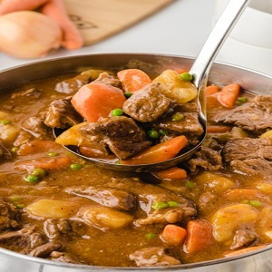

Stew Beef
Beef stew is a comforting and hearty dish that is perfect for cold weather. This recipe creates a flavorful and tender beef stew with a rich and savory broth.
Ingredients
- 2 pounds beef stew meat, cut into 1-inch cubes
- 2 tablespoons olive oil
- 1 onion, chopped
- 2 carrots, peeled and chopped
- 2 celery stalks, chopped
- 3 cloves garlic, minced
- 4 cups beef broth
- 1 cup red wine (optional)
- 2 bay leaves
- 1 teaspoon dried thyme
- 1 teaspoon dried rosemary
- Salt and pepper to taste
Instructions
- Heat the olive oil in a large pot or Dutch oven over medium-high heat.
- Add the beef stew meat to the pot and cook until browned on all sides. Remove the meat from the pot and set it aside.
- Add the onion, carrots, celery, and garlic to the pot and cook until the vegetables are tender.
- Return the beef stew meat to the pot and add the beef broth, red wine (if using), bay leaves, thyme, rosemary, salt, and pepper.
- Bring the mixture to a boil, then reduce the heat to low and cover the pot. Simmer for 2-3 hours, or until the beef is tender.
- Remove the bay leaves and adjust the seasoning with salt and pepper, if needed.
- Serve the beef stew hot with crusty bread or over mashed potatoes.